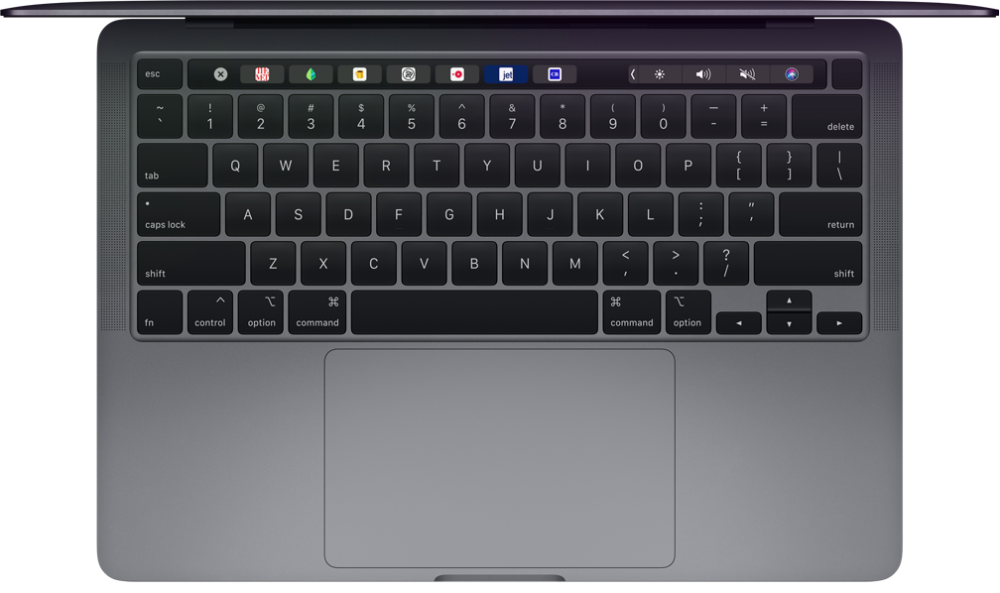

MacBook Pro
ทรงพลัง พร้อมลุย
เริ่มต้นที่ ฿42,900
โปรเซสเซอร์สูงสุดรุ่นที่ 10
พร้อมประสิทธิภาพกราฟิก
เร็วขึ้นสูงสุด 80%1
หน่วยความจำสูงสุด 32GB สำหรับใช้งานแอพระดับมืออาชีพพร้อมกันหลายแอพ
จอภาพ Retina อันน่าทึ่ง
พร้อมเทคโนโลยี True Tone
Magic Keyboard, Touch Bar
และ Touch ID เพื่อประสิทธิภาพ
การทำงานที่ยกระดับไปอีกขั้น
MacBook Pro ได้ยกระดับโน้ตบุ๊คให้เหนือชั้นไปอีกขั้น ทั้งในด้านความสะดวกสบายในการพกพา และขุมพลังความแรง เพราะไม่ว่าคุณจะมีไอเดียมากมายขนาดไหน คุณก็สามารถทำไอเดียเหล่านั้นให้กลายเป็นจริงได้เร็วยิ่งกว่าที่เคย ด้วยโปรเซสเซอร์และหน่วยความจำประสิทธิภาพสูง กราฟิก อันล้ำสมัย ตัวจัดเก็บข้อมูลที่เร็วเหลือเชื่อ และอีกมากมาย ซึ่งทั้งหมดนี้อยู่ในตัวเครื่อง ขนาดกะทัดรัดที่มีน้ำหนักเพียง 1.4 กก.
โปรเซสเซอร์ Intel
แบบ
4-core
ประสิทธิภาพกราฟิก
เร็วขึ้นสูงสุด1
80%
หน่วยความจำ
สูงสุด
32GB
ความเร็วในการอ่านข้อมูล
ของ SSD สูงสุด
3.0GB/s
รีทัช ปรับแต่ง และทำงานกับรูปภาพความละเอียดสูงใน Affinity Photo ได้อย่างรวดเร็วในพริบตา
MacBook Pro รุ่น 13 นิ้ว พร้อมรับมือแม้กับงานที่หนักที่สุด เพราะมีโปรเซสเซอร์สูงสุด Intel Core i7 แบบ Quad‑core รุ่นที่ 10 นั่นหมายความว่าเมื่อคุณทำงานที่ต้องใช้พลังในการประมวลผลระดับมืออาชีพ ไม่ว่าจะเป็นการคอมไพล์โค้ด การวางแทร็คเสียงพร้อมกันหลายแทร็คเมื่อแต่งเพลง หรือการเข้ารหัสวิดีโอ คุณก็ทำทุกอย่างให้เสร็จเรียบร้อยได้เร็วกว่าเดิม และนี่ยังเป็นครั้งแรกที่คุณสามารถปรับแต่งหน่วยความจำ 32GB ได้ใน MacBook Pro รุ่น 13 นิ้ว เพื่อประสิทธิภาพเร็วขึ้นสูงสุด 50% เมื่อทำการปรับแต่งภาพระดับกิกะพิกเซลใน Photoshop2, โหลดเครื่องดนตรีเสมือนเพิ่มเติมได้มากขึ้น รวมถึงใช้งานระบบเสมือนจริงหลายระบบได้อย่างราบรื่นจนคุณต้องทึ่ง
โปรเซสเซอร์สูงสุด
Intel Core i7 รุ่นที่ 10
แบบ
4-core
Turbo Boost
สูงสุด
4.5GHz
หน่วยความจำสูงสุด
ความเร็ว 3733MHz
ขนาด
32GB
เร็วกว่า
ขนาด 16GB2
สูงสุด
50%
MacBook Pro แบบ Quad‑core
MacBook Pro แบบ Dual‑core (ค่ามาตรฐาน)
จำลองระบบพลวัตได้เร็วขึ้น3
2.8 เท่า
โปรเซสเซอร์ Intel รุ่นที่ 10 ที่มีให้เลือกพร้อมกราฟิก Iris Plus ใหม่อันทรงพลัง มอบประสิทธิภาพกราฟิกที่เร็วกว่ารุ่นก่อนถึง 80%1 คุณจึงตัดต่อวิดีโอได้ง่าย เรนเดอร์ภาพ 3D ได้เร็วขึ้น และเล่นเกมได้ลื่นไหลยิ่งกว่าเดิม
MacBook Pro แบบ Quad-core พร้อม Intel Iris Plus Graphics
MacBook Pro แบบ Quad-core พร้อม Intel Iris Plus Graphics 655
(ค่ามาตรฐาน)
ประสิทธิภาพเกมลื่นไหลขึ้น1
80%
MacBook Pro รุ่น 13 นิ้ว มาพร้อมโซลิดสเตทไดรฟ์ที่เร็วอย่างเหลือเชื่อ โดยมีความเร็วในการอ่านข้อมูลแบบเรียงลำดับสูงสุดถึง 3.0GB/s10 ซึ่งการกำหนดค่าโดยมาตรฐานนั้นมีความจุมากกว่ารุ่นก่อนหน้าถึง 2 เท่า (256GB, 512GB หรือ 1TB) รวมถึงมีความจุสูงสุด 4TB ด้วย เรียกว่ามีพื้นที่มากพอให้คุณพกรูปภาพและวิดีโอทั้งหมดติดตัวไปได้ทุกที่ แถมด้วยชิพ Apple T2 Security ที่จะทำให้ทุกอย่างได้รับการเข้ารหัสโดยอัตโนมัติอย่างฉับไวอีกด้วย
ตัวจัดเก็บข้อมูลแบบ SSD
ความจุสูงสุด
4TB
ความเร็วในการอ่านข้อมูลแบบ
เรียงลำดับสูงสุด10
3.0GB/s
ความเร็วในการเขียนข้อมูลแบบ
เรียงลำดับสูงสุด10
3.0GB/s
MacBook Pro รุ่น 13 นิ้ว ออกแบบมาเพื่อให้คุณทำทุกสิ่งทุกอย่างได้เร็วและมีประสิทธิภาพมากขึ้น โดย Magic Keyboard ใหม่ มาพร้อมกลไกแบบกรรไกรที่ได้รับการปรับปรุงให้ดียิ่งขึ้น โดยมีการ ขยับขึ้นลงของปุ่มที่ระยะ 1 มม. เพื่อประสบการณ์การพิมพ์ที่ดีที่สุดเท่าที่เคยมีมาในโน้ตบุ๊ค Mac ส่วนปุ่ม Escape ที่มีมาโดยเฉพาะก็ช่วยให้คุณสลับไปมาระหว่างโหมดและมุมมองต่างๆ ได้อย่างรวดเร็ว นอกจากนี้ยังมีปุ่มลูกศรรูปตัว T กลับหัวที่ช่วยให้คุณเลื่อนไปยังส่วนต่างๆ ขณะที่เขียน โค้ดยาวๆ หลายบรรทัด ทำงานสเปรดชีต หรือเล่นเกมได้ง่าย พร้อมด้วย Touch Bar ที่นำปุ่มลัด อันทรงพลังมาอยู่ตรงหน้าคุณ และ Touch ID ที่ให้คุณยืนยันตัวตนได้ในพริบตา
MacBook Pro ทุกรุ่นมาพร้อมชิพ Apple T2 Security ซึ่งเป็นชิพรุ่นที่ 2 ที่เราออกแบบขึ้นมาสำหรับ Mac โดยเฉพาะ เพื่อให้ทุกอย่างที่คุณทำปลอดภัยยิ่งขึ้นไปอีก ทั้งยังมีโปรเซสเซอร์ร่วม Secure Enclave ที่เป็นรากฐานของความสามารถของระบบการบูทที่ปลอดภัยและการเข้ารหัสตัวจัดเก็บข้อมูล นอกจากนี้ยังผสานตัวควบคุมแบบแยกที่มีมากมาย รวมถึงตัวควบคุมการจัดการระบบ ตัวควบคุมเสียง และตัวควบคุม SSD เข้าไว้ด้วยกันเป็นหนึ่งเดียว ขณะเดียวกันชิพ Apple T2 Security ก็ยังทำให้คำสั่งเสียงที่คุ้นเคยอย่าง "หวัดดี Siri" นั้นใช้งานได้ใน MacBook Pro ซึ่ง Siri ก็พร้อมเสมอที่จะช่วยคุณเปิดแอพ ค้นหาเอกสาร เล่นเพลง หรือตอบคำถามต่างๆ ของคุณ
ดูรายงานอย่างเป็นทางการของเราเกี่ยวกับชิพ Apple T2 Security (PDF)จอภาพ Retina มาพร้อมแผงแบ็คไลท์ LED ที่สว่าง รวมถึงสามารถแสดงสีดำได้ดำสนิทและ แสดงสีขาวได้สว่างสดใส ทั้งยังรองรับขอบเขตสีกว้างแบบ P3 จึงสามารถแสดงสีเขียวและสีแดง ได้สดใสกว่า sRGB ยิ่งกว่านั้น MacBook Pro ทุกรุ่นยังมาพร้อมเทคโนโลยี True Tone ซึ่งจะปรับ ไวท์บาลานซ์ให้ตรงกับอุณหภูมิสีของแสงรอบๆ ตัวคุณอย่างแนบเนียน เพื่อมอบประสบการณ์ การดูที่เป็นธรรมชาติยิ่งขึ้น นอกจากนี้ MacBook Pro ยังมีมิติเสียงแบบไดนามิกที่ให้ความรู้สึกและเสียงได้กว้างยิ่งกว่าขนาดของตัวเครื่องที่เห็นมาก ภาพยนตร์จะเต็มอิ่มสมจริงยิ่งขึ้น ส่วนเพลง ก็ดังกระหึ่มยิ่งกว่าที่เคย และยังมีไมโครโฟนในตัวทั้งสามที่จะสร้างแนวเสียงเพื่อให้รับเสียง ในทิศทางของคุณได้ชัดเจนยิ่งขึ้น ทั้งตอนโทร FaceTime และตอนที่พูดกับ Siri
ความสว่าง
500 นิต
แสดงสีสันได้
มากกว่า sRGB 25%
เทคโนโลยี
True Tone
เสียงสเตอริโอ
ที่มีมิติเสียงกว้าง
Thunderbolt 3 ได้รวมแบนด์วิดท์ที่สูงเป็นพิเศษเข้ากับที่สุดแห่งความอเนกประสงค์ของมาตรฐานอุตสาหกรรม พอร์ต USB‑C เพื่อให้ได้มาซึ่งพอร์ตเดียวที่ตอบโจทย์ทุกความต้องการ ไม่ว่าจะถ่ายโอนข้อมูล ชาร์จไฟ หรือส่ง สัญญาณภาพก็สามารถทำได้จากช่องต่อเพียงช่องเดียวด้วยแบนด์วิดท์ในการถ่ายโอนข้อมูลสูงสุด 40Gb/s หรือ สูงกว่า Thunderbolt 2 ถึงสองเท่า นอกจากนี้ MacBook Pro ยังมี Thunderbolt 3 มาให้สูงสุดถึง 4 พอร์ต คุณจึงทำทุกอย่างที่ว่ามานี้จากด้านไหนของเครื่องก็ได้ หรือถ้าอยากใช้กับอุปกรณ์ที่มีอยู่แล้วก็เชื่อมต่อได้เลยง่ายๆ ด้วยสายหรืออะแดปเตอร์ อีกอย่างคือไม่ว่าหัวต่อสายจะหงายหรือคว่ำ ก็จะเป็นด้านที่ถูกและใช้งานได้กับ พอร์ต Thunderbolt 3 เสมอ
ดูเพิ่มเติมเกี่ยวกับ Thunderbolt 3 >
ถ่ายโอนข้อมูล
สูงสุด 40Gb/s
ชาร์จและจ่ายไฟจาก
พอร์ตไหนก็ได้
เชื่อมต่อกับ
eGPU
รองรับจอภาพ 6K ได้ 1 จอ,
จอภาพ 5K ได้ 1 จอ หรือ
จอภาพ 4K สูงสุด 2 จอ11
คุณสมบัติ Sidecar ให้คุณขยายพื้นที่ทำงานโดยใช้ iPad เป็นจอภาพที่สองคู่ไปกับ Mac12 ดังนั้นคุณจะทำงานในแอพหนึ่งแล้วเปิดอีกแอพดูไปพร้อมๆ กันหรือดูอาร์ตเวิร์กบน MacBook Pro ขณะใช้เครื่องมือและพาเลตสีบน iPad ก็ทำได้ นอกจากนี้คุณยังสะท้อนหน้าจอเพื่อให้ทั้งสองจอภาพแสดงคอนเทนต์เดียวกันได้ด้วย ซึ่งเหมาะมากสำหรับแชร์ให้คนอื่นๆ เห็นในแบบเดียวกับที่คุณเห็นเป๊ะๆ
คุณสมบัติ Sidecar ได้นำความง่ายในการใช้งานและความแม่นยำของ Apple Pencil มาสู่แอพเพื่อการสร้างสรรค์ที่คุณชื่นชอบบน Mac13 คราวนี้คุณจะใช้ Apple Pencil ทำงานออกแบบใน Illustrator, แก้ไขรูปภาพใน Affinity Photo หรือสร้างโมเดล 3D ใน ZBrush ก็ได้ทั้งนั้น และก็ยังมีแถบด้านข้างที่นำเอาปุ่มสำคัญต่างๆ อย่าง Command, Control และ Shift มาไว้ให้คุณที่ปลายนิ้วอีกด้วย
ไม่ว่าจะคัดลอกโน้ตบน iPhone แล้ววางลงบน Mac สร้างสตอรี่บอร์ดบน Mac แล้วพกติดตัวคุณไปด้วยบน iPhone หรือเริ่มเล่น เกม Apple Arcade บนอุปกรณ์เครื่องไหนก็ได้ แล้วมาเล่นต่อจนจบบนอีกเครื่องหนึ่ง เพราะ Mac ของคุณสามารถทำงานร่วมกับ iPhone ในแบบที่ไม่มีคอมพิวเตอร์เครื่องไหนทำได้
ดูเพิ่มเติมเกี่ยวกับการทำงานร่วมกันของอุปกรณ์ต่างๆ ของคุณ >
ข้อความ
ส่งและรับข้อความได้บนเครื่อง Mac ของคุณ
โดยข้อความทั้งหมดที่ปรากฏบน iPhone จะไป
ปรากฏบน Mac เช่นกัน ดังนั้นทุกบทสนทนา
จึงอัพเดทตรงกันหมดเสมอ
Handoff
เริ่มเขียนเอกสาร อีเมล ข้อความ โน้ต และอีกมากมายบน Mac แล้วทำต่อให้เสร็จบน iPhone หรือจะเริ่มจาก iPhone แล้วไปทำต่อบน Mac ก็ทำได้ทั้งนั้น
macOS Catalina
ทั้งแอพที่สร้างสรรค์มาเป็นพิเศษเพื่อเพลง ทีวี และพ็อดคาสท์โดยเฉพาะ,
คุณสมบัติใหม่ๆ อันชาญฉลาดอย่าง Sidecar, เทคโนโลยีที่ทรงพลังสำหรับนักพัฒนา
และแอพในระดับใหม่หมดที่วันนี้พร้อมแล้วบน Mac
Apple Trade In
เพียงนำคอมพิวเตอร์ที่มีคุณสมบัติเข้าเกณฑ์มาแลกรับเป็นเครดิตหรือให้เรานำไปรีไซเคิลให้ฟรี
เรียกว่าทั้งดีต่อคุณและดีต่อโลกใบนี้
พร้อมสำหรับทุกสิ่งที่จะได้พบเจอในมหาวิทยาลัย
เลือกซื้อในราคาส่งเสริมการศึกษาจาก Apple >สัมผัสกับพลังความแรงที่จะยกระดับธุรกิจของคุณให้ก้าวล้ำไปอีกขั้น
ดูเกี่ยวกับ Mac กับธุรกิจ >